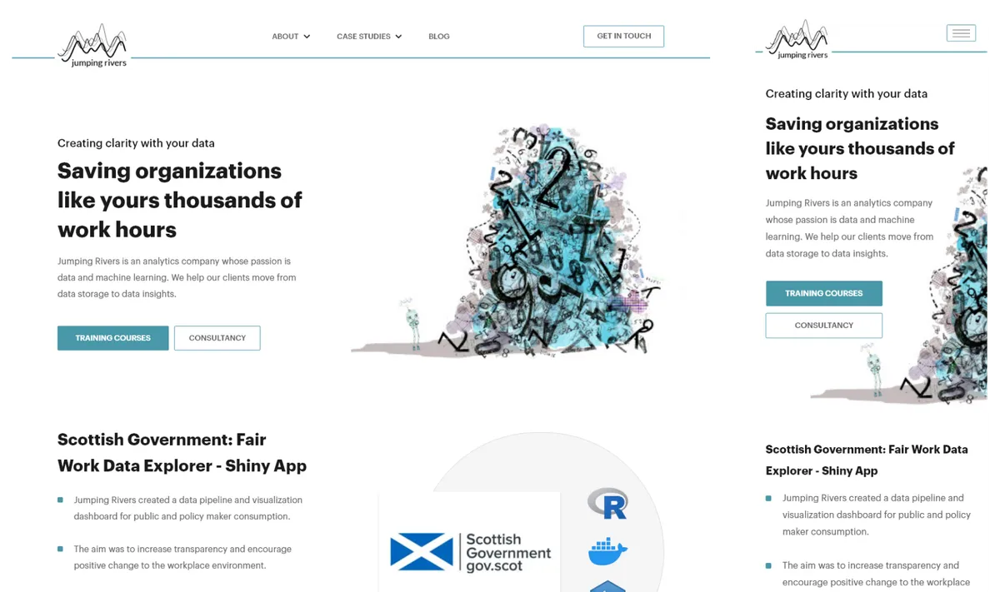

The client
Jumping Rivers is a data science consultancy. It runs training courses and helps organisations get value from their data.
Colin Gillespie first asked us to rebuild just the homepage in Hugo as a proof of concept, with the code kept in GitLab. It worked well, so we rebuilt the whole site, redesigning some sections along the way. This was a BugleLab project, the web agency I ran at the time.
The problem
The Jumping Rivers team was tired of running their site on WordPress. They wanted to change pages, courses and blog posts in GitLab, which most of the team already use every day.
They also wanted what a static site gives you for free: very fast pages, almost nothing to attack, and a full version history of every change.
The build
- Static site: built with Hugo, which is fast and suits content-heavy sites with lots of blog posts. We built a custom theme as plain HTML first, then connected it to the content.
- Content migration: posts and pages were exported from WordPress with a migration plugin, so nothing was retyped by hand.
- Basket: the site didn't need card payments, so instead of a full e-commerce backend we built a lightweight basket in plain JavaScript that sends orders through Netlify Forms.

The results
The site passed Google's Core Web Vitals assessment, based on how fast it is for real visitors over 28 days. The team now publish courses and posts from GitLab, without logging into WordPress.
Building a basket from scratch was harder than it looked. It had to do most of what WooCommerce does, and the edge cases took real work. But it became a reusable module we used on later projects.
What they said
Excellent job. It's now much easier for us to create courses and posts from within GitLab. Thanks!
— Colin Gillespie, Jumping Rivers